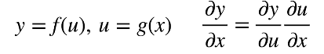
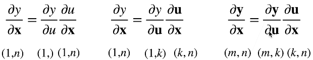
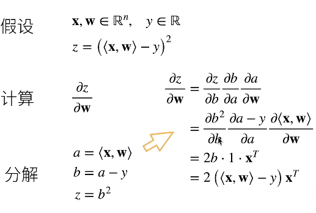
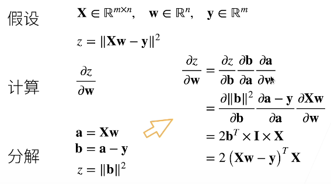
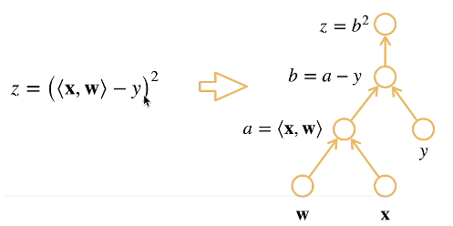
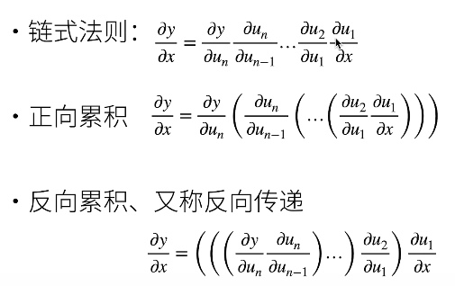
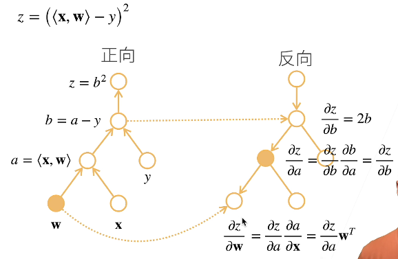
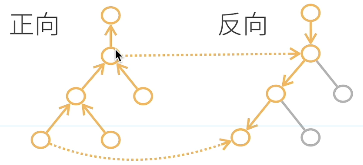

Pytorch深度学习-第三节：自动求导
基础知识
向量链式法则
标量的链式法则
拓展到向量

例1：

$ < x,w >$表示向量内积。
例2：

自动求导
自动求导计算一个函数在指定值上的导数。
计算图
- 将代码分解成操作子
- 将计算表示成一个无环图
- 其中每个节点表示一个操作（或输入）

自动求导的两种模式

反向累积
先计算外层函数的导数。如图，先计算$z$对$b$的导数。由于$b$不是输入，所以此时不知道其值，就需要读取在正向计算时已经得到的值。

反向累计总结
- 构造计算图
- 前向：执行图，存储中间结果
- 反向：从相反方向执行图
- 去除不需要的枝

- 去除不需要的枝
复杂度
- 计算复杂度：O(n)
- 通常正向和反向的代价类似
- 内存复杂度：O(n)，一i那位需要存储正向的所有中间结果
- 正向累计为O(1)
- 这也是深度学习需要高性能GPU的原因
代码实现
假设我们相对函数$y=2x^Tx$关于列向量$x$求导：1
2
3
4import torch
x = torch.arange(4.0)
x
1 | tensor([0., 1., 2., 3.]) |
在计算$y$关于$x$的梯度之前，我们需要一个地方来存储梯度。1
2x.requires_grad_(True) # 等价于 x = torch.arange(4.0, requires_gard=True)
x.grad
然后计算$y$。
1 | y = 2 * torch.dot(x, x) |
1 | tensor(28., grad_fn=<MulBackward0>) |
通过反向传播函数来自动计算y关于x每个分量的梯度。1
2y.backward()
x.grad
1 | tensor([ 0., 4., 8., 12.]) |
1 | x.grad == 4 * x |
1 | tensor([True, True, True, True]) |
现在计算x的另一个函数。1
2
3
4x.grad.zero_() # 在默认情况下，PyTorch会累计梯度，我们需要清除之前的值
y = x.sum()
y.backward()
x.grad
1 | tensor([1., 1., 1., 1.]) |
---------------------本文结束---------------------